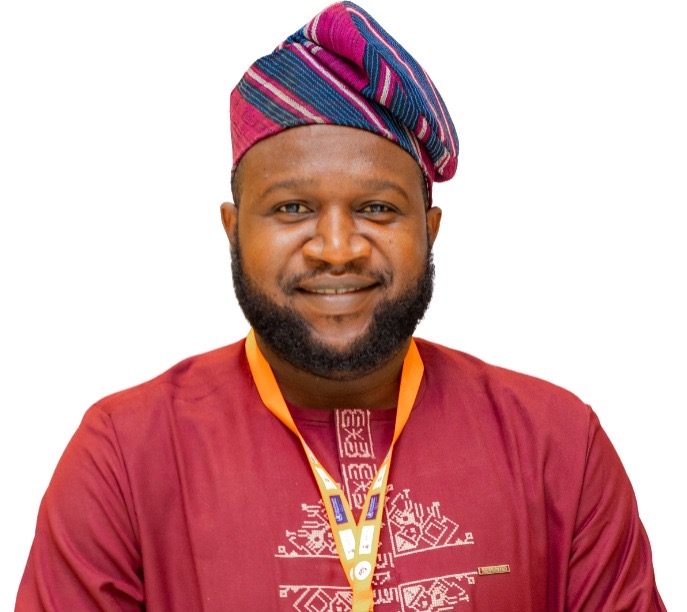

Communications strategy
Shape the message, audience, channels and communications calendar around a shared purpose.
Purpose-led communications
Moshood Isah
Strategic communications · Public health · Impact storytelling
I help mission-driven organisations turn complex programmes, evidence and leadership perspectives into clear stories that build trust, understanding and engagement.

I work at the intersection of public health, international development and strategic storytelling. My work connects programme evidence with the audiences who can act on it: policymakers, donors, development partners, journalists, communities and internal teams.
At eHealth Africa, I support communications for immunisation, digital health, health systems strengthening, maternal health, disease surveillance and related initiatives. My work includes impact reporting, publications, executive messaging, earned media, newsletters, websites, webinars and multimedia storytelling.
Previously at Yiaga Africa, I developed national media and citizen-engagement communications, produced editorial content, supported advocacy initiatives and built relationships with journalists across Nigeria.
A little more about what I bringA considered blend of clear thinking, careful execution and stories that move work forward.
Shape the message, audience, channels and communications calendar around a shared purpose.
Turn programme evidence and human experience into credible, engaging editorial and donor-facing narratives.
Build journalist relationships, support earned media and prepare leaders for interviews and public moments.
Give leadership perspectives clarity and consistency across speeches, messages and public communications.
Manage websites and email, and develop publications and multimedia that make information easier to use.
Coordinate webinars, stakeholder communications, cross-functional reviews and creative partners.
Plan and manage platform-ready content that builds community, carries the message and supports campaign goals.
Good communication bridges the distance between the evidence and the people it is meant to serve.
Programme learning shaped into clear, useful narratives for varied audiences.
Communications spanning immunisation, digital health, maternal health and more.
National media and citizen-engagement work, with journalist relationships across Nigeria.
A selection of websites, webinars, campaigns, reports and media work.
Project samples will appear here as they are added.
Fieldwork moments from community engagement, public health and communications in action.


I bring editorial direction and copywriting, media outreach, interview preparation, ethical human-interest storytelling, communications planning and practical delivery. I connect the message to verified evidence, coordinate reviews and creative production, choose the right channels and assess performance.
M.Sc., Mass Communication, Bayero University, Kano (2021)
B.Sc., Mass Communication, Bayero University, Kano (2012)
PMD Pro project management; CXL Storytelling; AI-powered digital marketing; digital journalism; communication strategy; email marketing; and editing training.
Public health · Development · Civic engagement
Open to conversations about meaningful communications, public health storytelling, media and creative collaboration.